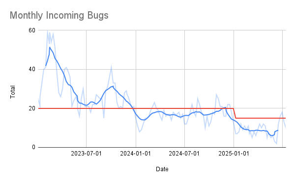
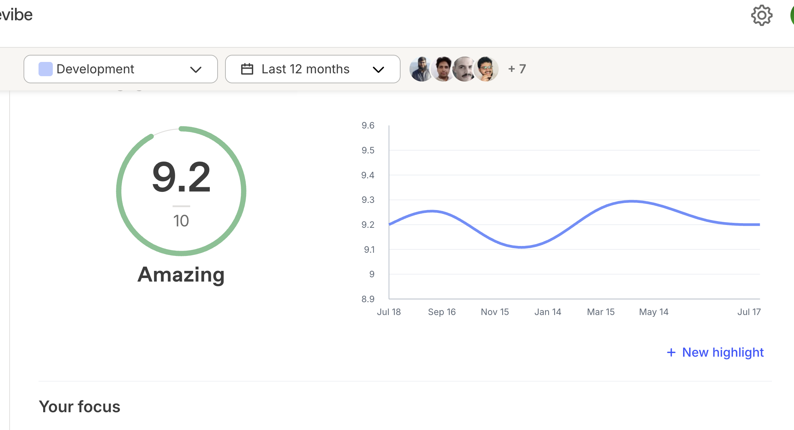

Elio Capella Sánchez
I'm currently the Head of Engineering at
Filestage.io. I'm a
technology leader and Computer Science Engineer with
over 16 years of hands-on experience, consistently coding
while guiding software development and driving business growth in startup
environments. Passionate about building high-performing teams and
leveraging technology to delight customers.
Work Experience (16 years)
-
Championed Infrastructure as Code, enabling per-PR test environments and
multiple daily releases.
-
Setup hiring process to scale the team from 6 to 22 engineers in 9
months on a tight budget
-
Fostered a strong team culture through regular 1:1s and career
development to achieve consistent 9/10 satisfaction scores.
-
Enhanced application security by implementing rate limiting, spam
detection, and disposable email filters, preventing abuse of free
trials.
-
Led security initiatives to achieve clean yearly audit reports and
obtain ISO 27017 certification.
-
Extended infrastructure to support U.S. market expansion, including new
region deployment, workload splitting, and database sharding for data
residency compliance.
-
Coached promising members into Engineering Managers to handle the larger
team size
-
Established a quality framework to measure success ratios for each
feature to keep squads accountable which resulted in low amount of
customer complaints and 99.9% uptime


-
Contributed to securing €2.8M Series A funding by supporting technical
due diligence and representing engineering practices.
-
Implemented team performance metrics (e.g., merged PRs, bug reports) to
identify bottlenecks and optimize processes.
-
Drove quality improvements by expanding end-to-end test coverage,
reducing technical tickets by 10x while increasing throughput.
-
Defined the future team structure into autonomous squads for faster,
independent delivery across product areas.
-
Reduced change failure rate by 25% with: automated functional tests,
monitoring an observability
-
Involved in feature concept discussions to ensure reliable, performant
and secure software
-
Automated release process, reducing human errors and enabling multiple
deployments per week.
-
Established CI pipeline with automated tests, linting, and formatting
checks to enforce quality and streamline collaboration.
-
Played key role in hiring: interviewed candidates, onboarded new
engineers, and introduced a programming assignment that improved
candidate quality.
-
First full-time developer at Filestage, taking over from founders,
students, and contractors to stabilize a fragile codebase.
-
Hands on coding a SPA (Angular.js, Node.js, MongoDB and AWS) to upload
and review files where users collaborate in real time
-
Introduced unit test practices raising coverage and resulting in a 30%
reduction in bug reports
-
Resolved frequent outages (multiple per week) by implementing proactive
monitoring, logging, and alerting which dramatically reduced the time to
recover
-
Broke down a 100,000 LoC complex monolith into modules with well defined
interfaces which reduced around 25% the size of the codebase and made it
easier to understand
-
Developed a cost-efficient web service on a small VPS powering complex
geo queries at 100 req/s and 200 ms p99 response time (Node.js, MongoDB
and DigitalOcean)
-
Developed high quality native iOS (Swift) and Android (Java) apps, 99.5%
of sessions were crash-free
-
Mobile apps heavily cached data and passive location updates to reduce
battery usage and server load
- Combined our apps reached 100k MAU and 4.5/5 rating
- Hired, coached and led a small team of junior developers
-
The Spanish Ministry of Culture granted the project with 50k€ (2nd out
of 500 projects)
-
Developed a web app (SPA: Backbone.js, Node.js and MongoDB) in which you
were able create the points of interest and then publish native iOS
(Objective-C) and Android (Java) apps which worked offline (content and
maps).
-
Constantly changing between multiple programming languages allowed me to
abstract from the implementation details and focus on the core aspects
of software development
-
Decided to use vector maps limited to the regions with point of interest
to reduce app size to speed up downloads and reduce uninstalls
- The Spanish Ministry of Tourism granted our project with 206k€
-
More than 200 apps released with our builder with a total of 250k
downloads
-
Developed a feature rich geotagging social network for web (SPA:
Backbone.js, Node.js and MongoDB) and iOS (Objective-C)
-
Using a javascript tech stack allowed for efficient full stack
development with less context switching
- Lean infrastructure design with a deploy with git push into a VPS
-
Accepted from 500 applications in a startup incubator (Desafío 22)
-
Collaborated with a team of 20 developers to develop a desktop
application (Java and Oracle DB) that allowed traders to price
derivatives
-
Experienced a major drop in the team's productivity which taught me the
importance of handling complexity and refactoring constantly
-
Built an aspect-oriented XML parse/serialize framework that
substantially reduced integration code with the valuation layer
-
Created a deployment script dramatically reduced from hours to minutes
the time to deploy and prevented human mistakes
-
Improved reliability through systematic testing and refactoring, learned
and applied TDD
-
Maintained a financial web portal (ASP.net, C# and SQL Server) and
managed to improve the page loading times by 50% by optimizing database
queries
-
Learned a new technology stack (Adobe Flex) to develop a financial
calculator to calculate loan payments
-
Researched upcoming web frameworks (Django, Ruby on Rails, etc) to
decide if it was worth it the switch
Education
Courses